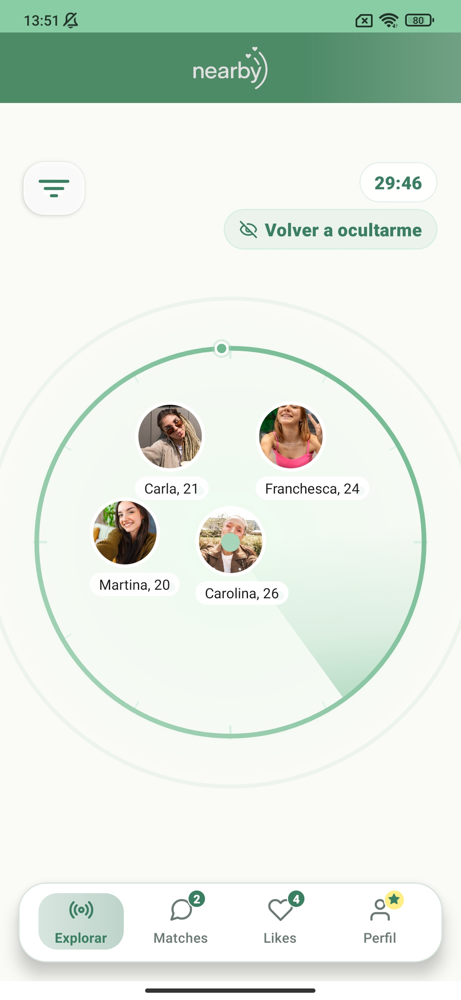
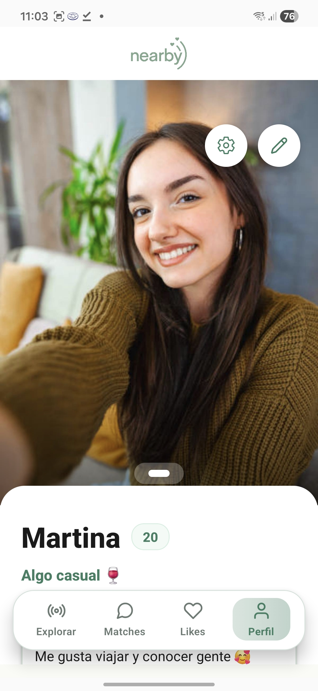
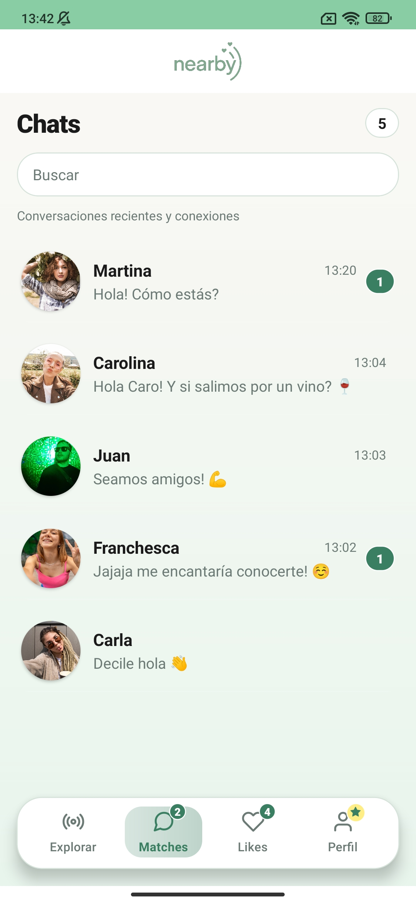
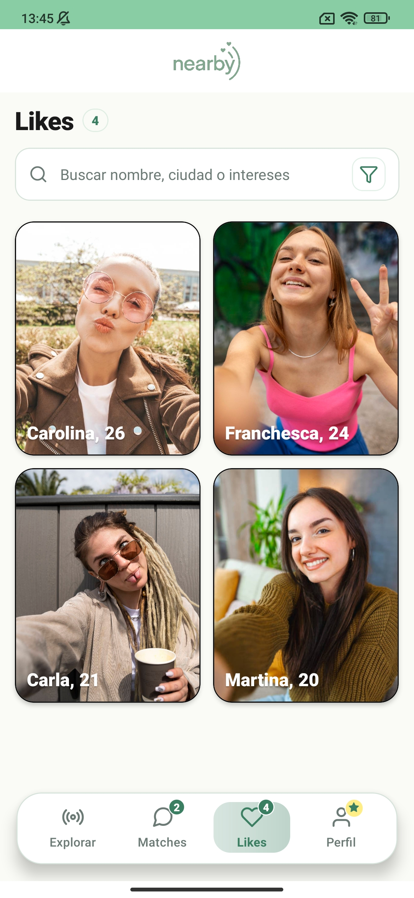

Nearby usa un radar inteligente para mostrar personas afines que están físicamente cerca tuyo, en este momento. Nada de match con alguien a 500km. Solo conexiones reales.

En minutos podés estar viendo quién está cerca tuyo y con ganas de conocerte.
Subí fotos reales, contá un poco sobre vos, tus intereses y qué buscás. Sin filtros ridículos, solo vos.
Con un toque, el radar escanea tu zona y te muestra quién está activo ahora mismo, a pocos metros de distancia.
Cuando hay match mutuo, se abre el chat. Sin intermediarios ni algoritmos raros. Directo al grano.
El radar de Nearby actualiza en tiempo real usando sockets. Cada vez que alguien se muestra cerca de vos, aparece en tu pantalla al instante. Sin esperas, sin bots, solo gente real.

Nearby no tiene bots, no tiene cuentas falsas. Solo personas reales con ubicación verificada. Podés ver fotos reales, intereses en común y cuántos metros te separan.

Cuando hay interés mutuo, se crea el chat automáticamente. Mensajes clásicos, fluidos y en tiempo real para que la conexión no se pierda.

No pierdas el tiempo adivinando. En la sección de Likes podés ver una lista de todas las personas que mostraron interés en vos, para que el match sea más rápido.
Lo instalé en el centro comercial y en 5 minutos ya tenía 3 perfiles visibles. Salí a tomar un café con una de esas personas esa misma tarde. Algo que Tinder nunca me dio.
El radar es una locura. Staba en un recital y vi que había dos personas con los mismos intereses que yo a 200 metros. Los mandé un like, matcheamos, y ahora somos amigos. Gratis y sin drama.
Finalmente una app que no te hace pagar para ver quién te dio like. Es honesta, simple y funciona. Nada de algoritmos que te esconden perfiles para que pagues.
Nearby solo se activa cuando vos querés. Podés ocultarte en cualquier momento. Nunca compartimos tu ubicación exacta con nadie. Vos decidís cuándo y por cuánto tiempo te mostrás.
Descargá Nearby gratis y empezá a conectar con personas reales que están a metros de distancia.
Gratis · Sin tarjeta de crédito · Disponible en Argentina